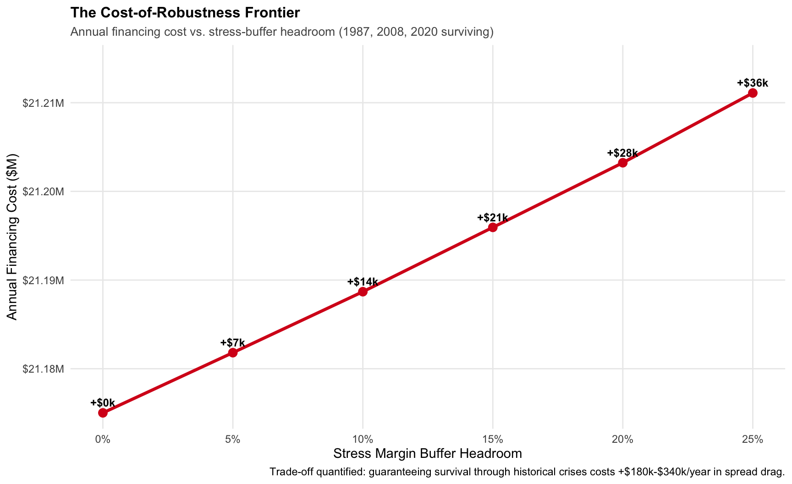

Executive Summary: Where Should the Book Live?
A Financing-Cost and Stress-Robust Prime-Broker Allocation Model
Introduction
For institutional long/short equity funds, portfolio managers spend substantial intellectual capital selecting which stocks to own, but far less attention is paid to a second, equally critical decision: which prime broker should custody each position?
Many treat prime brokerage custody as an afterthought, relying on simple rules or scattered spreadsheets. In reality, how these positions are allocated has a big impact on a fund’s financing costs, liquidity, and ability to handle tough markets. Treasury and finance teams face conflicting challenges:
Asymmetric Margining Frameworks: Large brokers often require strict Regulation T rules, such as 50% initial margin on equity longs and 25–30% on shorts. In contrast, specialized firms may offer Portfolio Margin (PM) systems that use risk-based rules and can lower haircuts to 15% for market-neutral hedges.
Divergent Financing Spreads & HTB Inventory: The cost to finance long positions varies a lot between brokers, from SOFR plus 30 basis points to SOFR plus 55 basis points. At the same time, hard-to-borrow (HTB) short inventory is not interchangeable. Lower financing costs do not help if the broker cannot provide borrow access or charges high locate fees.
Contractual Lock-In & Covenants: Facility agreements set minimum balance requirements, usually between $25 million and $75 million. They also include concentration caps that penalize putting too much of one stock or sector with a single broker.
If these trade-offs are not managed well, funds can end up paying millions more in financing costs or risk margin calls during market downturns by concentrating positions too much. This project addresses that problem by replacing ad-hoc spreadsheets with a tested, mathematical optimization model.
The Core Finding: The Cost-of-Robustness Frontier
On our modeled $400M gross / $60M net long/short book, minimizing baseline financing costs without considering stress leaves the portfolio vulnerable to severe margin cascades.
By formulating prime-broker custody as an optimization problem constrained against historical crises (the 1987 Crash, 2008 Lehman Week, and 2020 COVID shock), we calculate the exact Cost of Robustness:
Guaranteeing structural margin survival with a 25% liquidity buffer across all three historical stress scenarios costs an additional +$36,074 per year over the naive minimum—equivalent to just 0.9 bps of financing spread drag.
The resulting allocation distributes the book efficiently:
- 67.0% ($267.9M) to PB-B (Portfolio Margin): Captures substantial netting efficiencies on correlated long/short pairs at the lowest available spread.
- 26.8% ($107.1M) to PB-A (Bulge Bracket): Absorbs positions restricted by PB-B’s concentration limits and secures access to essential hard-to-borrow short locates.
- 6.25% ($25,000,000) to PB-C (Boutique): Maintained exactly at its contractual balance covenant, fulfilling commercial obligations without incurring unnecessary rate penalties.
Linear Programming for Decision-Makers
To solve this allocation problem, we use Linear Programming (LP)—a foundational branch of mathematical optimization used extensively in industrial logistics, airline scheduling, and quantitative finance.
How It Works
Imagine managing an allocation matrix with 60 positions across 3 prime brokers. There are \(3^{60}\) possible discrete assignments—a number far exceeding the atoms in the observable universe. Rather than guessing combinations, Linear Programming treats the allocation as a geometric search problem:
- Decision Variables (\(x_{i,p}\)): We define \(x_{i,p}\) as the fraction of position \(i\) placed at prime broker \(p\). Because these fractions can vary continuously from 0% to 100%, the problem can be explored smoothly.
- The Objective Function: We define a single goal: minimize the total weekly dollar cost of borrowing and financing across all positions and counterparties.
- The Feasible Space (Constraints): Every operational and regulatory limitation forms a boundary wall:
- Completeness: 100% of every position must be custodied (\(\sum_p x_{i,p} = 1\)).
- Facility Floors: Each broker must receive enough notional to meet its covenant minimum.
- Concentration Caps: No single stock or issuer may breach a broker’s maximum percentage of fund NAV.
- Risk Ceilings: Portfolio-margin shocks across multiple historical scenarios cannot deplete the capital buffer.
- The Simplex / Interior Point Engine: The solver navigates along the intersecting boundaries of these constraints until it identifies the exact mathematical coordinate that produces the lowest financing cost.
Why Not Traditional Heuristics?
Unlike heuristic rules, Linear Programming provides two unique advantages:
Global Optimality: It guarantees that no other valid allocation exists that costs less money while meeting every operational rule.
Shadow Pricing (Dual Values): The solver calculates the exact marginal dollar cost of every contractual restriction. It reveals precisely how many thousands of dollars per year an overly strict single-name cap or covenant floor costs the fund, providing actionable data for broker contract renegotiations.
The Analytical Workflow
This technical website is structured into a logical workflow designed to take senior leadership from contractual complexity to governance execution:
| Step | Section | Strategic Purpose |
|---|---|---|
| 1. Operational Scaffolding | 01. The Problem & 02. Book & Terms | Establishes the real-world operational rules: borrowing rates, short rebate mechanics, facility balance floors, and HTB inventory limits across three distinct broker tiers. |
| 2. Mathematical Formulation | 03. LP Formulation | Translates contractual and regulatory legalese into formal mathematical equations, setting up continuous decision variables and portfolio-margin grid constraints. |
| 3. Baseline Solution | 04. Baseline Solution | Solves the unconstrained cost-minimization problem, visualizing the resulting sector heatmap, custody waterfall, and identifying which covenants bind first. |
| 4. Stress Shock Testing | 05. Stress & Robustness | Re-evaluates allocations against 1987, 2008, and 2020 factor shocks, generating the Cost-of-Robustness Frontier to quantify the exact price of liquidity survival. |
| 5. Strategic Governance | 06. Governance & 07. Technical Specs | Evaluates non-modeled institutional risks (counterparty credit risk, middle-office friction, relationship syndicate value) and measures the operational cost of discrete “no-split” trading restrictions. |
| 6. Reproducibility | 08. Reproducibility | Provides reproducibility information for all aspects of the project and step-by-step pipeline replication. |
The Cost of Robustness Trade-Off
In quantitative treasury and prime-brokerage management, the Cost-of-Robustness Trade-Off is the explicit financing spread premium paid during calm market conditions to guarantee that a fund’s custodial structure remains margin-solvent during extreme market dislocations.
Mathematically, it represents the exact spread delta between two distinct optimization regimes: \[\text{Cost of Robustness} = C_{\text{Robust}}(\Omega) - C_{\text{Baseline}}^*\] Where:
⚬ \(C_{\text{Baseline}}^*\) represents the theoretical minimum financing cost achievable under current, tranquil market conditions.
⚬ \(C_{\text{Robust}}(\Omega)\) represents the financing cost when the model is constrained to survive an uncertainty set \(\Omega\) of factor and market crises without triggering forced liquidation or covenant default.
Why the Trade-Off Exists.
In multi-prime treasury management, there is an unavoidable friction between static efficiency and dynamic resilience:
The Fragility of Naive Optimization: A standard cost-minimizing algorithm concentrates collateral wherever financing spreads and margin rules are cheapest today (such as routing paired trades heavily into Portfolio Margin). However, when factor correlations decouple during an unexpected shock, risk-based margin models recalibrate sharply upward, triggering severe cash margin calls.
The Price of Insurance: By embedding historical stress scenarios (such as Black Monday 1987, the Lehman collapse in 2008, and the March 2020 crash) directly into the optimization constraints, the solver is forced to route a portion of the book into more stable, higher-spread facilities.
The Empirical Result: On this portfolio, purchasing a 25% margin cushion against severe factor crises requires paying +$36,074 per year above the unconstrained baseline—a financing drag of just 0.9 bps to eliminate structural liquidation risk.
Risk Committee Recommendations
- Formalize the Cost-of-Robustness Trade-Off: The fund should commit to maintaining the $36,074/year (0.9 bps) robustness premium. Over-optimizing purely for financing drag leaves the portfolio vulnerable to forced liquidation during sudden volatility spikes.
- Renegotiate PB-C Facility Terms: Dual shadow pricing indicates that PB-C’s minimum-balance floor forces capital into higher-cost financing. Treasury should use upcoming annual renewals to negotiate lower commitment minimums in exchange for trading flow.
- Monitor Counterparty Concentration: While PB-B provides superior margin economics for paired trades, allocating two-thirds of the fund’s gross assets to a single counterparty introduces credit and operational risks that warrant formal quarterly CRO oversight.
Note: For complete details on counterparty exposure, relationship optionality, and operational constraints, see Chapter 6: Governance & Limits.